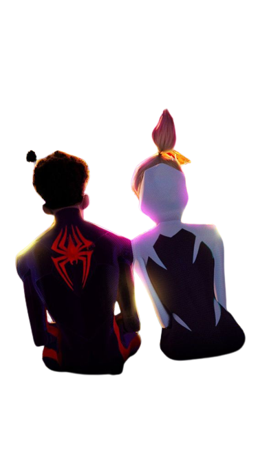
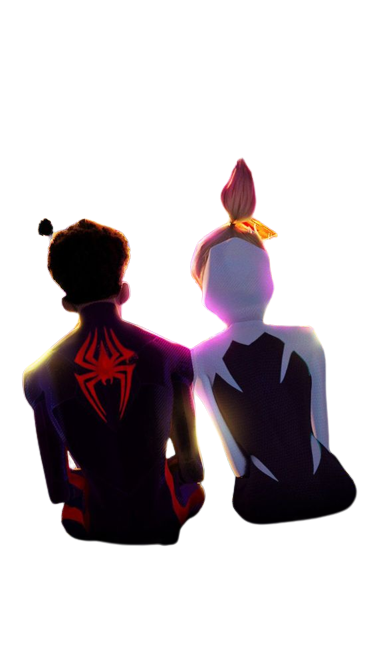

Spider-Verse
Miles morales & Gwen
Miles Morales and Gwen Stacy's friendship is one of the most heartwarming and inspiring relationships in the Spider-Man universe. They are both young people who were bitten by radioactive spiders and gained spider-like powers. They both feel the weight of responsibility that comes with being a superhero, and they are both determined to use their powers to make the world a better place.
Miles morales
Miles Morales was born and raised in Brooklyn, New York City. He is of African-American and Puerto Rican descent. His parents are Jefferson Davis, a police officer, and Rio Morales, a city councilwoman. Miles is a bright and intelligent teenager who is passionate about art and music. He is also a gifted athlete who excels in basketball.
Miles Morales was bitten by a genetically engineered spider during a school field trip to Oscorp Industries. The bite gave him the same powers as Peter Parker, including superhuman strength, speed, agility, and the ability to cling to walls. Miles also developed a unique power, the ability to camouflage himself into his surroundings.
Gwen
Gwen is from a universe where Peter Parker died after being bitten by the spider. She is determined to honor his memory by fighting crime and protecting the innocent. She is also a close friend of Miles Morales, another Spider-Man from another universe. Gwen is a popular character among fans of the film, and she is praised for her strength, determination, and her unique fighting style.
Gwen is a significant character in the Spider-Man: Into the Spider-Verse film. She is a strong and independent woman who is not afraid to fight for what she believes in. She is also a role model for young girls, and she shows that anyone can be a superhero.